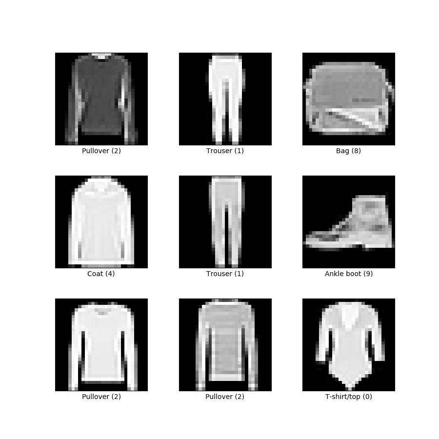

Date: 12/21/21
Statistical Modeling on Fashion MNIST Dataset
Introduction
This project served as my introduction to the use of models such as logistic regression, principle component analysis, and kNN. While this project shows only a basic understanding of these models, I decided to showcase this project because it shows my understanding of the MATH behind the algorithms. This is usually overlooked, but understanding the mathematical concepts is critical if you're ever going to work on making your own models.

The Dataset
The fashion MNIST dataset contains grey-scale, low-resolution images articles of clothing that fit within 10 categories. Some examples are shown to the right. In this form it's easy for us to see, but on the backend the images are structured in a way where each pixel within the image is represented as a digit between 0 and 255. The lower the digit, the more black that pixel is and vice versa.
Preparation
Normally it would be necessary to split our data into training and test datasets. However, there's no need in this case as the training and test datasets are already separated into their own .csv files. Therefore the only data prep required here was to transform the samples into ndarray objects.
Logistic Regression
For this multi-class classification scenario, I built a logistic regression model from scratch. To do this, I defined a function that contains for-loops required to run iterations for training the model, the loss function, the gradient descent algorithm, and the softmax function the acquires the probabilities required to select a class for each image.

Principle Component Analysis (PCA)
As mentioned before, each pixel of each image is represented as a number between 0 and 255. In this case with 60,000 (28 x 28) images, we have a total of 47,040,000 numbers! In order to train our models, each digit is used in a computation when computing the model's optimal weights, the "learning" in machine learning. Now, real-world applications require larger, higher-resolution images, which can be understood as even more numbers. As you can guess, this is a slippery slope that eventually requires super-computers.
How to combat this? Lower the number of digits per image. In this model, I reduce each image from 784 digits to just 2. Of course going from 784 digits per image to just 2 will result in lots of lost information, but you'll be surprised how effective this model still is.
Here you see a plot containing all of our 60,000 images. Since each image has been reduced to 2 numbers, we can now plot them all on an x-y plot! The color of each point represents that image's class. Despite only being identified by 2 digits, you can see that the model was quite effective at grouping together images of certain classes. Of course we'd both agree that reducing our images to 2 digits was overkill, but I used 2 digits so that the model's purpose can be visualized. I'm still impressed by how effective this model still is despite reducing the dimensions so much.
Using Model Packages
Introduction
Now, it's not always necessary to reinvent the wheel. Rather than building models from scratch, it makes much more sense to use already-made packages as this will save time and probably perform better. Below I'll be running two classification models through the sci-kit learn package. In interest of adding value rather than just showing I can use a package, I also go over the main mathematical function at work
kNN
As you can see below, the ski-kit learn package allows us to achieve better results in just 3 lines of code. First we set an instance of the function, then we fit, then we get the accuracy of our model. This is already a 3% improvement from our model.

The concept behind kNN is this: depending on the value of k, the model will select the k most similar samples to the sample being classified. Based on the k samples selected, the classification will be based on whichever class has the highest proportion out of the k samples. In the equation below, the function is calculating the probability that sample y belongs to class j. On the right side, it's taking the sum of instances of class j among the k samples and calculating the proportion of the k samples. This is done for each class j and the class with the max proportion is the class that the model selects.